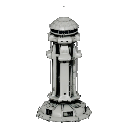
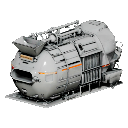
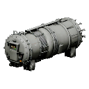
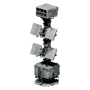
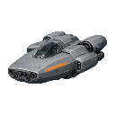
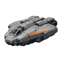
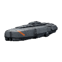

Wiki / Player's Guide

Massive Frontier · Player's Guide
Commander's Handbook
How Massive Frontier plays: screens, controls, economy, base, ships, fleets and combat.
This guide explains how Massive Frontier plays: the screens, the controls, the economy, your base, research, ships, fleets and combat. It describes the game as it is today. Features that are still being built are marked In development, so you always know what works now.
For the exact numbers behind every ship, module and building, see the Stat Reference. For the story of the Frontier, see the Lore.
Chapters
Chapter 1Welcome to the FrontierYour first session: how your commander is created and what you start with. Chapter 6The ForgeManufacturing weapons, armor, shields and special modules.
Chapter 6The ForgeManufacturing weapons, armor, shields and special modules. Chapter 9Command the SectorFleets: assigning ships, deploying, orders, travel, fleet level and repairs.
Chapter 9Command the SectorFleets: assigning ships, deploying, orders, travel, fleet level and repairs. Chapter 10Combat and the GalaxyEngaging enemies, how damage works, and what is still coming to the Frontier.
Chapter 10Combat and the GalaxyEngaging enemies, how damage works, and what is still coming to the Frontier.

Chapter 2Controls and ScreensThe HUD, the three map views, every screen and every key.
Chapter 3Resources and the EconomyMinerals, Helium-3, Antimatter and Coins: how you earn them, store them and spend them.
Chapter 4Your HomeworldThe Command Bridge, power, the build queue, building upgrades and base level.
Chapter 5The Tech TreeThe Research Laboratory: nodes, tiers, prerequisites and what research unlocks.
Chapter 7The ShipyardResearching and building hulls: classes, roles, costs, queues and bay space.
Chapter 8The Perfect FitFitting modules to ships: slots, mass, Marks and upgrades.
Chapter 11Levels and ProgressionPlayer level, base level and fleet level: what raises each one and what it unlocks.